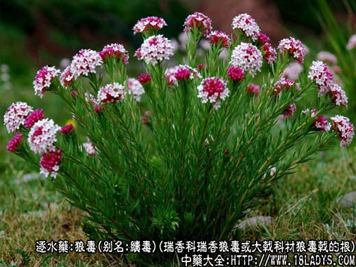
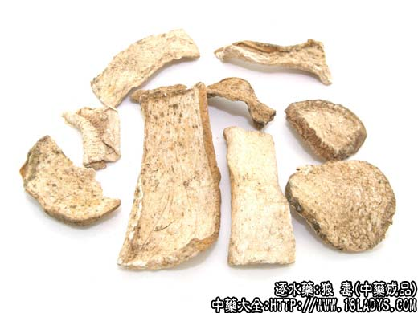
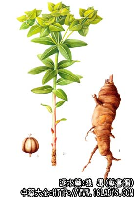

狼毒为少常用中药，《神农本草经》列为下品。《本草纲目》列入草部毒草类。
别名：续毒，川狼毒，白狼毒。猫儿眼根草。
来源：为瑞香科植物瑞香狼毒或大戟科材狼毒戟，月腺大戟的根。均为野生。
产地：全国大部分地区均产。
性状鉴别：狼毒为瑞香狼毒的干燥根，呈圆锥形至长圆柱形，稍扭曲，长7～30厘米，直径2～7厘米；根头部留有地上茎残基。外表棕色至棕褐色，有纵皱及横生的细长皮孔，有的残留细根。栓部剥落后，露出柔软的纤维。体轻，质韧，不易折断，断面中心木质部黄白色，外圈韧皮部白色，呈纤维状，气微、味微甘、微苦而辣。
狼毒大戟：干燥的根呈圆柱形，直径约4～7厘米，厚约0.5～3厘米，偶有达7厘米者。表面黄棕色或淡棕色。栓皮成重叠的薄片状，易剥落。断面不平坦，有暗棕色与黄白色相同的明显同心环。质轻，易折断，断面粉性，水湿后有粘性，撕开时可见粘丝。气微，味甘，并有刺激性辣味。
月腺大戟：本根与狼毒大戟的根相似，唯切面的同心环纹颜色较浅，不如狼毒大戟根明显。以水湿之不显粘性。
主要成分：瑞香狼毒的根含甾醇、酚性成分、氨基酸、三萜类及有毒的高分子有机酸。可能还含蒽甙。
狼毒大戟：根含树脂10.46%及1%～2%硬性橡胶。
功效与作用：从瑞香狼毒中提得一种狼毒甙，原称川狼毒素的抗菌物质，并称其毒性很低。狼毒煎剂灌胃6克（生药）/公斤，可提高小鼠痛阈20%～50%（电击鼠尾法及热板法）。叶、根中可能含有蒽甙，能增强小肠蠕动，可治疗便称。
狼毒大戟的根可用以杀蛆，灭孑孓。20%的煎剂对麻醉犬的呼吸、血压及离体蛙心、肠管均无作用。
炮制：切片，醋制。
性味：苦、辛、平、有毒。
归经：心、肺经。
功能：逐水祛痰，破积杀虫。
主治：水肿腹胀，痰、食、虫积，心腹疼痛，咳嗽气喘，淋巴结，皮肤、骨、、副睾等结核、疥癣、痔瘘。
临床应用：狼毒有大毒，非恒用之品，惟质实气壮，积聚、心腹胀如鼓者用之。
1、治卒心腹症坚，两胁下有气结者，常与附子等配伍，如狼毒丸。
2、治一切食积、痰积、虫积、气结、痞块疼痛、胸膈肚腹膨胀、饮食不消等，狼毒研末单用，或做丸服。对于淋巴结核未破者，狼毒煎水洗也很有效。
此外，狼毒煎鸡子服，可治疗胃癌，肝癌、肺癌及甲状腺乳头状腺癌等，临床报道，曾用上法治疗上述疾病25人，均有疗效。但有恶心、呕吐及轻度腹泻，没有发现肝、肾及神经方面不良副作用。
使用注意：狼毒有毒，内服宜慎；体弱及孕妇忌服。
用量：内服：煎汤，1～2g；或入丸、散。
外用：磨汁涤或研末调敷。
处方举例：1、狼毒丸（《圣惠方》）治积聚，心腹相连腹痛，心腹胀如鼓者：醋制狼毒120g，制附子90g，防葵90g，上药捣为末，炼蜜丸桐子大。每食前以粥饮下5丸，以利为度。
2、内蒙古（《中草药新医疗法资料选》）治睾丸结核：狼毒、核桃、白矾各等分，烧存性，共研细末。每日一次，每次4g，开水送服。
注：（《本草纲目》）所载的狼毒，系瑞香狼毒的根，故应以此为正品。但目前多数地区所用的狼毒，为大戟科植物，叫白狼毒。此外，广东以木芋头的块茎切成薄片，作狼毒入药，应注意鉴别。